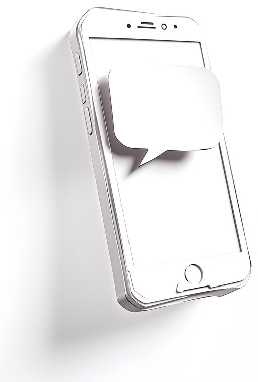
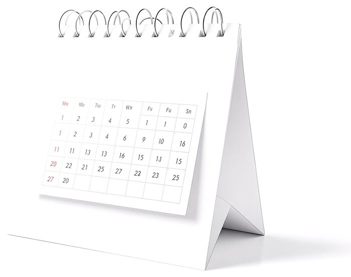
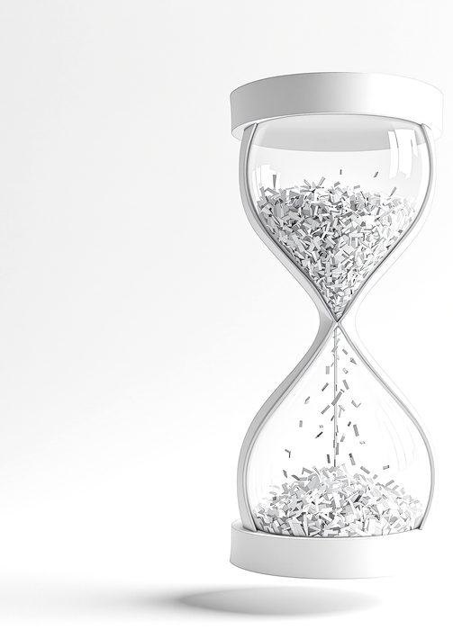
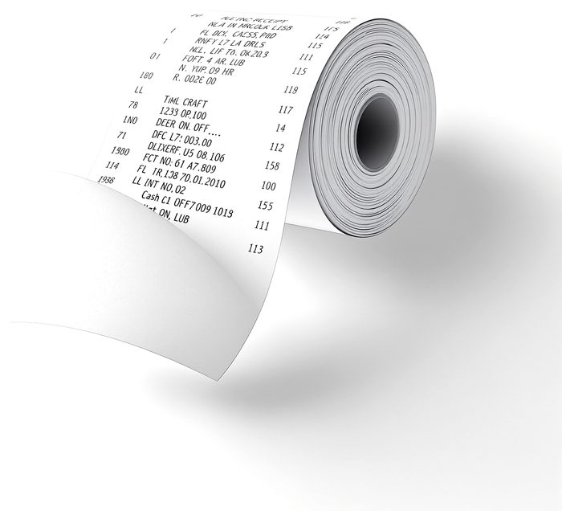
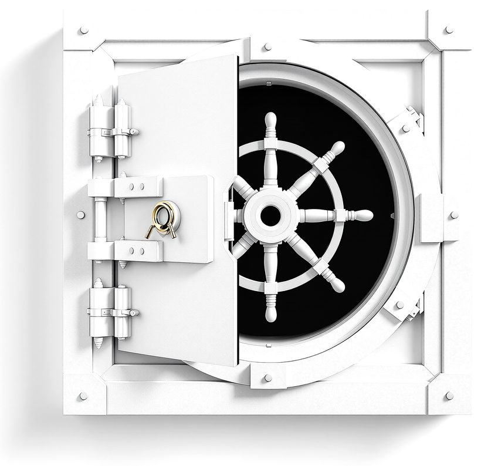
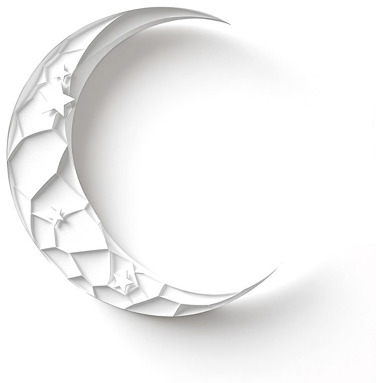

Die erste Frage kommt vor dem Kaffee.
Dein Mandant fragt vom Handy, dein Berater antwortet aus deinem Wissen. Unter deiner Marke.
quoroAI beantwortet die Fragen deiner Mandanten aus deinem Wissen, unter deiner Marke, auf deiner Adresse. Und rechnet die Arbeit gleich mit ab.
Software aus Erfurt, Daten in Frankfurt und Falkenstein.
Ein Tag mit deinem zweiten Kopf.
Dein Mandant fragt vom Handy, dein Berater antwortet aus deinem Wissen. Unter deiner Marke.

Alle Gespräche der Nacht stehen offen im Cockpit. Wird es heikel, übernimmst du mitten im Satz.
Jede Zahl nennt ihre QuelleDer Mandant wählt im Portal, du bestätigst mit einem Klick. Kein einziges Telefonat.

Auch die, die dein Berater gearbeitet hat. Mit Nachweis, für die nächste Rechnung.

Zeiten, Pauschalen und Auslagen, tagegenau gerechnet. Und was kostet dich das alles?
Standard ab 44,25 € je Mandant und Monat, monatlich kündbar
Verarbeitung in der EU, kein Training mit deinen Inhalten, Auftragsverarbeitung nach Art. 28 DSGVO.

Unter deinem Namen, in deiner Methodik, während du schläfst.

Konto anlegen, Marke setzen, ersten Mandanten einladen: ein Nachmittag, kein Projekt. Monatlich kündbar, keine Einrichtungsgebühr.